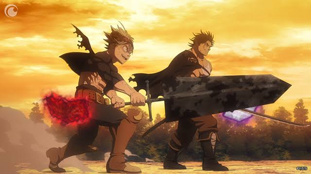

Iconic moments from Black Clover that defined the series

Scene 1: Asta & Yami vs. Dante (Episode 170)
Image 1 of 5
About These Moments
From Asta unlocking his Black Form to Captain Yami surpassing his limits alongside him against Dante, use the controls above to slide through the top five fan-favourite scenes from the anime.